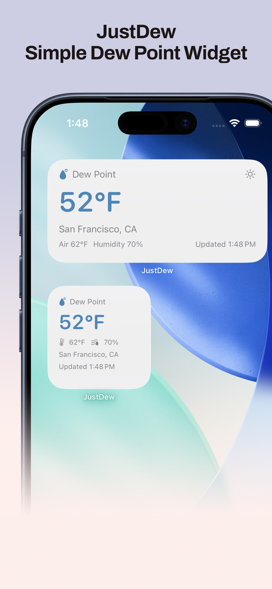
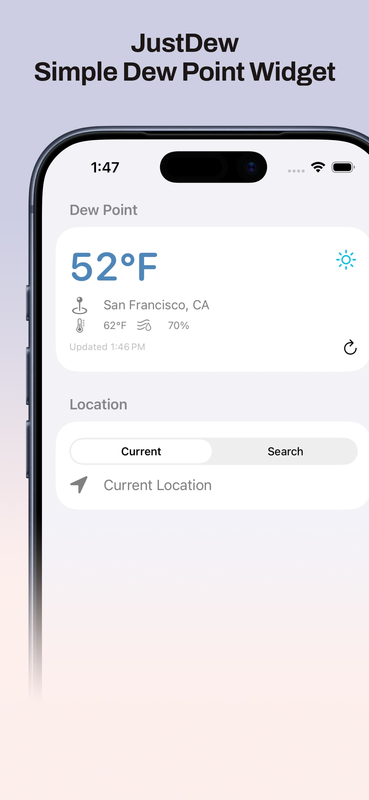
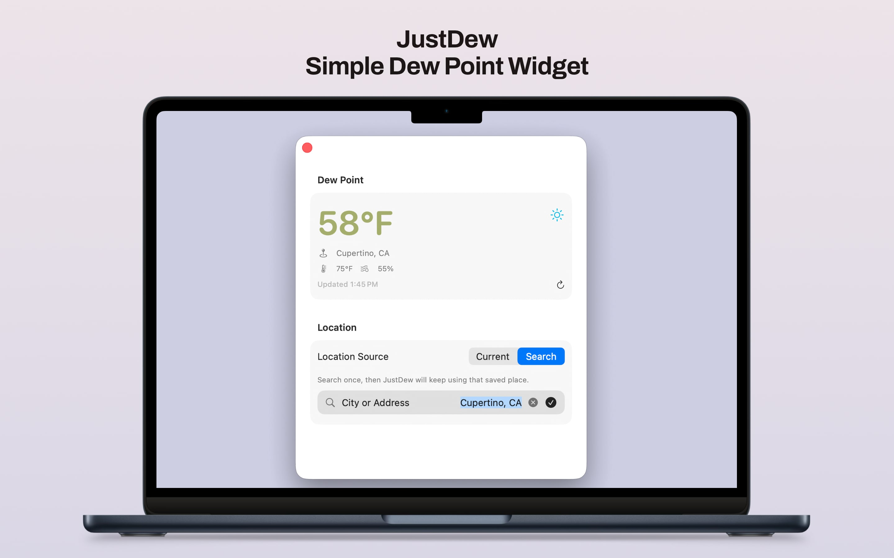
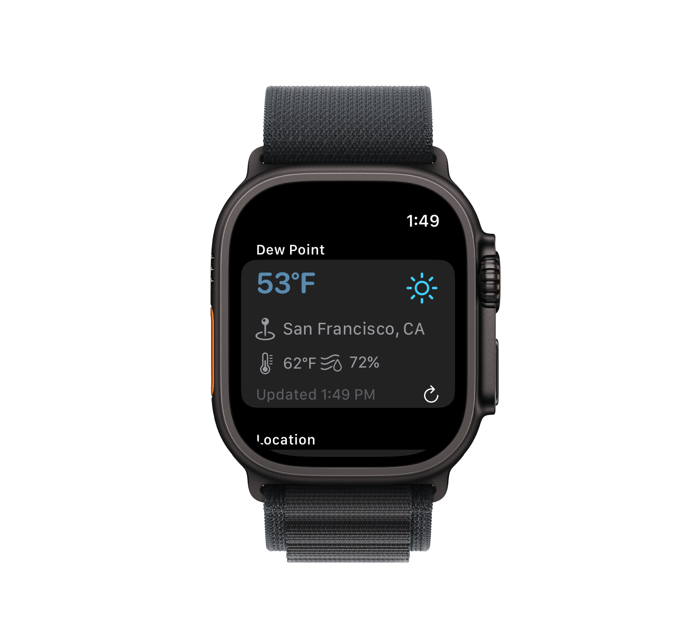
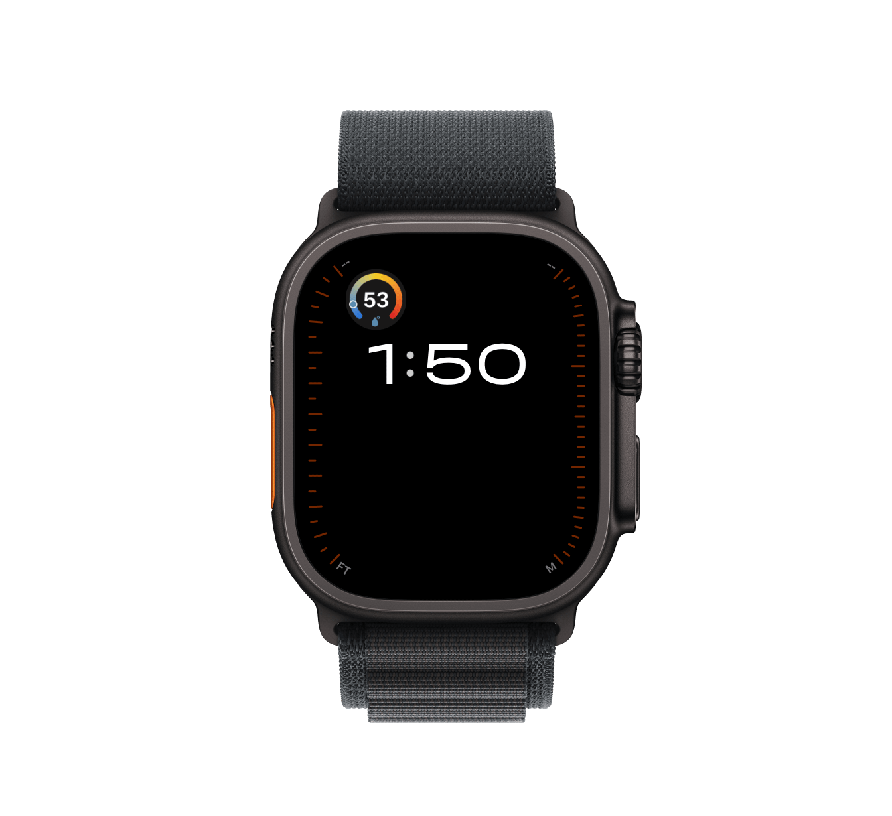

Why Dew Point?
Humidity alone can be misleading.
Dew point is a steadier way to understand how much moisture is actually in the air, which makes it a better quick read for comfort.

JustDew is built around one focused job: keep dew point easy to check without opening a full weather app.
Why Dew Point?
Dew point is a steadier way to understand how much moisture is actually in the air, which makes it a better quick read for comfort.
Privacy
JustDew uses location only to retrieve the dew point for the selected place. I do not collect, log, sell, or share your location or weather data.
Screenshots




Features
Open the app for dew point, air temperature, humidity, location, and last update time.
Small and medium widgets keep the dew point readable with compact air and humidity context.
Use native macOS widget styling so JustDew fits cleanly on the desktop.
Apple Watch complications include circular, rectangular, inline, and corner layouts.
A blue to yellow to red scale makes mild, muggy, and Miami-style dew points easy to scan.
Follow your current location automatically, or save one city and keep widgets pinned there.